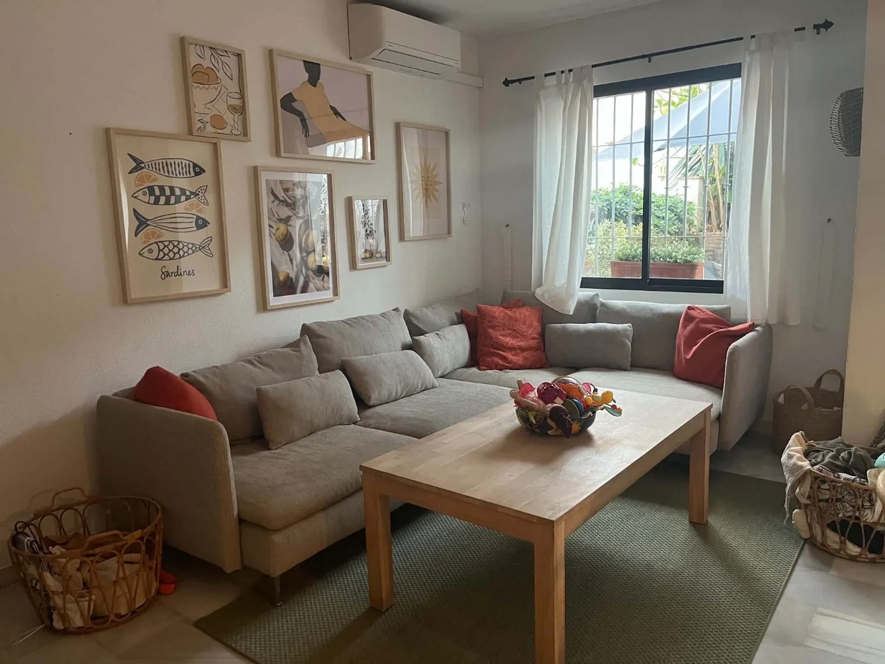
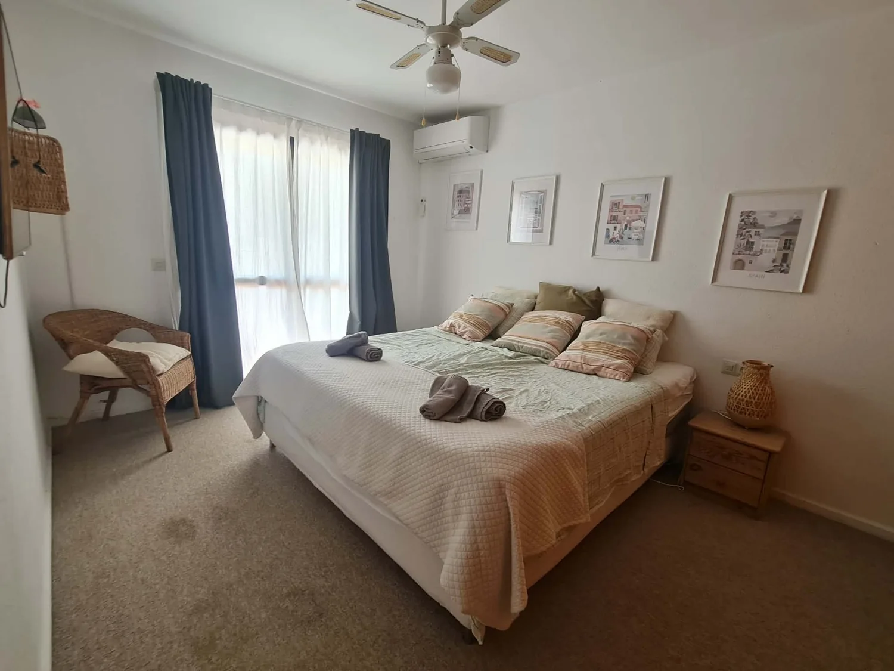
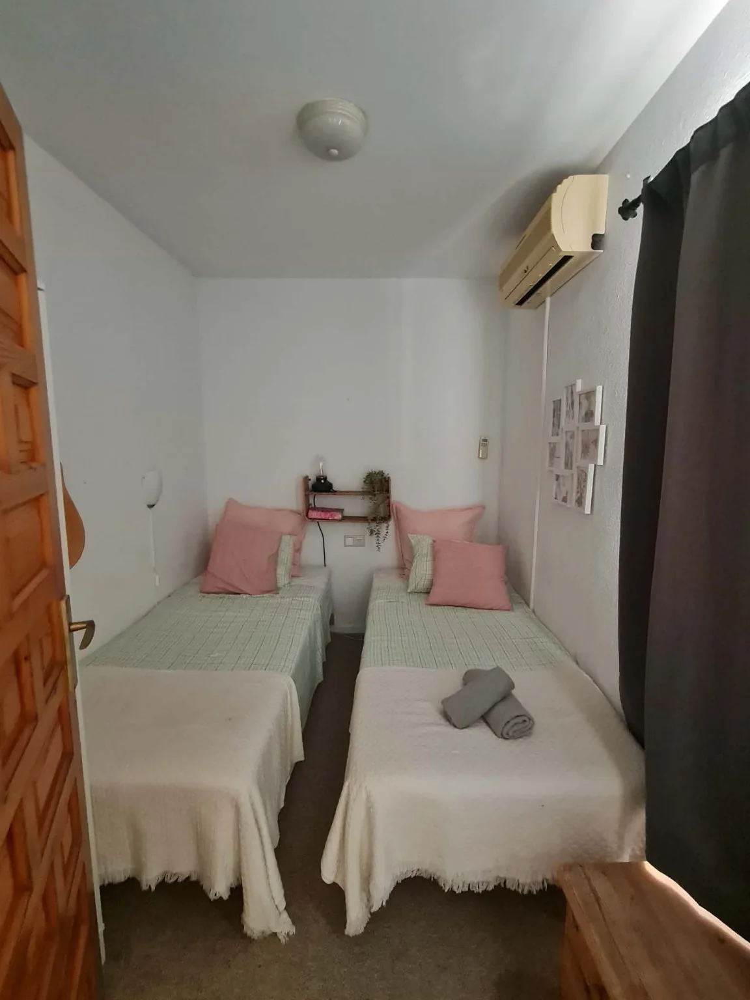

Casa Amar
Rart at komme til. Nemt at være i.
Casa Amar er indrettet som en base, der fungerer i praksis. Her er plads til at være sammen, mulighed for at trække sig tilbage og flere forskellige steder at opholde sig inde og ude.
Om sommeren flytter meget af livet ud på patioen. I de køligere måneder får stuen og spisepladsen en større rolle. Huset kan bruges hele året – bare på forskellige måder.
Stueetagen
Stue, køkken og patio hænger sammen.
Fra entréen går man direkte ind i den åbne stueetage. Køkkenet ligger til højre, spisepladsen midt i rummet og sofaområdet ud mod patioen.
Den store hjørnesofa, et nyere 55-tommers TV, bøger og spil gør stuen til et rart sted at lande efter en dag ude. Spisebordet kan udvides fra fire til seks personer.
- Aircondition og varme i stuen
- Bluetooth-højttaler til inde og ude
- Badeværelse med bruser ved entréen
Køkkenet
Indrettet til at blive brugt.
Ikke bare til morgenmad, men også når man har lyst til at lave et rigtigt måltid hjemme.
Madlavning
Ovn, kogeplade, opvaskemaskine og almindeligt køkkenudstyr.
Kaffe
Espressomaskine og kværn – plus Nespresso som et nemt alternativ.
Tagterrassen
Et ekstra sted med udsigt og ro.
Her er loungestol, hjørnesofa, bord, store krukker og solsejl. Mod den ene side ses Mijas Pueblo og bakkerne. Fra sofaen ses Fuengirola, havet og på klare dage bjergene mod øst.
Tagterrassen bruges forskelligt gennem året. Om sommeren ofte tidligt og sent på dagen. Om vinteren kan dagtimerne være behagelige, mens aftenerne bliver køligere og mere fugtige.
Første sal
Tre soveværelser med plads til seks.
Soveværelserne skal først og fremmest fungere: gode senge, opbevaring, aircondition og ro.

Master bedroom
Stor dobbeltseng, skabsvæg, TV og udgang til en lille altan.
Soveværelse 2
To enkeltsenge, nyere topmadrasser og klædeskab.

Soveværelse 3
To enkeltsenge, nyere topmadrasser og en mindre skabsvæg.
På første sal ligger også husets oprindelige badeværelse med badekar. Det er enkelt, rent og funktionelt.
Beliggenheden
I bakkerne – med meget inden for rækkevidde.
Casa Amar ligger i Cerros del Águila. De færreste kender området på forhånd, men mange sætter pris på roen i bakkerne og den korte afstand til kysten.
25 min.til Málaga Lufthavn
5–10 min.til strand og Fuengirola
5–7 min.til Miramar og Carrefour
Få min.til restaurant og pool til fods
Din ferie
Det samme hus kan bruges på flere måder.
Casa Amar er ikke bygget omkring én bestemt ferieform. Det fungerer både til en klassisk ferieuge, en tur med vennerne og et længere ophold uden for højsæsonen.
Familieferie med livet udenfor.
Pool, strand og udflugter om dagen. Patio, grill og skygge i de varmeste timer. Huset fungerer som en rolig base, når alle har brug for en pause.
Golf, ture og lange dage ude.
Behagelige temperaturer gør det let at kombinere golf, Málaga, Mijas, Ronda eller Caminito del Rey med rolige timer hjemme.
Sol på næsen og hverdagen flyttet sydpå.
Det er ikke strandferie i klassisk forstand. Til gengæld kan man sidde ude i solen om dagen, arbejde hjemmefra, lave mad med gode råvarer og tage på ture i weekenden.
Et rigtigt hjem i en periode.
WiFi, køkken, varme, gode senge og plads til at være sammen gør huset anvendeligt til længere ophold, familiebesøg og ferier uden for den klassiske sommersæson.
Årstiderne betyder noget
Sommeren lever sent. Vinteren flytter indenfor, når solen går ned.
Om sommeren høres cikader og stemmer fra naboer, der lever sent udenfor. Om vinteren er aftenerne stille. Solen kan være dejlig i dagtimerne, men når den går ned, bliver det køligt, og aftenen fortsætter typisk inde i huset eller ude på restaurant og bar.
Området
Fra hverdagsnært til en hel dagstur.
Casa Amar ligger roligt i bakkerne, men meget er inden for kort rækkevidde. Her er nogle af de muligheder, der gør huset til en god base.
Tæt på huset
- Restaurant Cerros del Águila
- Urbanisationens pool i sæsonen
- Mini-supermarked med basisvarer
- Gran Parque de Mijas til gåtur, løb og børn
Strand, by og indkøb
- Fuengirola og Los Boliches
- La Cala de Mijas
- Miramar og Carrefour
- Strand, restauranter og havneområde
En halv dag ude
- Mijas Pueblo
- Málaga
- Golfbaner langs kysten
- Markeder, museer og tapas
Når I vil længere væk
- Ronda og Setenil de las Bodegas
- Caminito del Rey
- Granada og Alhambra
- Gibraltar eller Córdoba
En lille rejse fra rejsen
- Sevilla med en eller flere overnatninger
- Sierra Nevada til ski eller vandring
- Marokko med fly eller organiseret tur
- En længere rundtur i Andalusien
Brug området på jeres måde
Vælg det, der passer til ferien.
Nogle dage handler om pool og korte ture. Andre om golf, mad eller en tur ind til byen. Mulighederne kan kombineres uden at hele ferien behøver være planlagt på forhånd.
Familier
Pool, park og korte ture.
Det er let at kombinere en formiddag ude med en rolig eftermiddag hjemme. Gran Parque, stranden og poolen giver flere muligheder uden lange køreture.
Golf
Mange baner inden for rækkevidde.
Forår og efterår passer godt til golf. Efter runden er huset et roligt sted at spise, hvile og samle dagen op.
Mad og byliv
Spis ude – eller tag råvarerne med hjem.
Fuengirola, La Cala og Málaga giver mange muligheder. Carrefour og lokale markeder gør det også nemt at lave mad hjemme.
Mange muligheder – uden at ferien behøver blive pakket.
Nogle bruger mest tiden ved huset, poolen og kysten. Andre bruger Casa Amar som udgangspunkt for golf, byliv og længere ture. Beliggenheden gør det muligt at vælge til og fra undervejs.
Billeder
Gå en tur gennem Casa Amar.
Fra de første rum til patio, tagterrasse, pool og udsigt. Brug filtrene, eller se hele huset i én samlet billedrejse.
Praktisk
Det vigtigste at vide, før I vælger huset.
Her er de forhold, der typisk betyder mest for, om et feriehus passer til opholdet. De mere detaljerede vejledninger samles senere i gæsternes digitale concierge.
Ankomst og transport
Bil giver frihed – men er ikke et krav.
Casa Amar ligger cirka 25 minutter fra Málaga Lufthavn. Mange vælger lejebil, fordi det giver mest frihed til strand, golf og udflugter. Huset kan også bruges uden bil: taxa koster typisk omkring 50 € fra lufthavnen og omkring 12 € fra Fuengirola station. Priserne er vejledende.
Hele året
Køling om sommeren og varme om vinteren.
Der er aircondition og varme i stuen og alle soveværelser. Huset fungerer derfor også uden for sommersæsonen, hvor dagene kan være milde, men aftenerne kølige.
Internet
WiFi på alle etager.
Mesh-netværket dækker stueetagen, første sal og tagterrassen. Det gør huset anvendeligt til streaming og til at arbejde hjemmefra i kortere eller længere perioder.
Pool
Stor fælles pool i sæsonen.
Urbanisationens pool er normalt åben fra maj til oktober i dagtimerne og er bemandet med livredder. Aktuelle åbningstider oplyses ved opholdet.
Børn
Udstyr, der sparer bagage.
Babyseng, højstol, trappegitter, UV-telt og Thule Urban-vogn er til rådighed. Cykler og løbehjul kan aftales på forhånd.
Udstyr
Til strand, sport og aftener hjemme.
Golfsæt, tennisketchere, strandudstyr, Bluetooth-højttaler og projektor er en del af huset. Det præcise udvalg bekræftes før opholdet.
Mad og indkøb
Basisvarer tæt på – større indkøb få minutter væk.
Der er et mindre supermarked i Cerros del Águila. Carrefour i Miramar har et stort udvalg af råvarer, slagter, delikatesse og almindelige dagligvarer.
Rejs let
Sengelinned og håndklæder er klar.
I skal ikke medbringe almindeligt sengelinned eller håndklæder. Vaskemaskine, opvaskemaskine og god opbevaring gør det også lettere ved længere ophold.
Det følger med
Mindre at pakke. Mere klar ved ankomst.
- Sengelinned
- Håndklæder
- Aircondition og varme
- WiFi på alle etager
- Veludstyret køkken
- Vaskemaskine
- Babyudstyr
- Projektor og højttaler
- Grill og udemøbler
- Udvalgt strand- og sportsudstyr
Når opholdet nærmer sig
Alt det praktiske samlet ét sted.
WiFi, aircondition, projektor, vaskemaskine, pool, affald og andre vejledninger bliver samlet i en mobilvenlig gæsteguide.
Korte videovejledninger
Hurtige svar på mobilen
Kun for aktuelle gæster
Kontakt
Kunne Casa Amar passe til jeres ferie?
Skriv med ønskede datoer, antal gæster og lidt om opholdet. Så kan vi hurtigt afklare, om huset og perioden passer.
Ingen bookingformular og ingen automatisk betaling. Først en almindelig dialog om datoer og ophold.
Cerros del Águila
Mijas Costa · Málaga